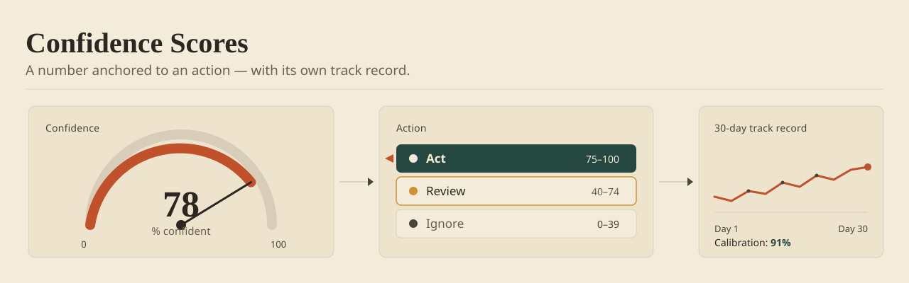

A score with no action attached is decoration. These five patterns sit at the harder problem most products never reach: not whether to show confidence, but how to make it mean something a person will move on.

Try it — the pattern, live
The same live demo that runs in the book edition's field guide. Synthetic data; nothing leaves the page.
1. Numeric Score with Threshold Hiding
Show a confidence percentage (0–100%) only when it clears a threshold (typically 60–70%). Below that line, say "Low confidence" or drop the number entirely.
- Stops the freeze: A user never stares at a 42% score and stalls. The system says "I'm not confident enough to recommend this," and the decision moves on.
- Trusts the expert: High confidence earns a number; low confidence becomes a "flag for review" instead.
- Quiets the screen: Not every recommendation needs a number on it.
| Confidence | Display | User Interpretation |
|---|---|---|
| 90%+ | "92% confident" (number + badge) | "I should trust this" |
| 70–89% | "Moderate confidence" (label only) | "Reasonable but worth verifying" |
| <70% | Hidden or "Low confidence" warning | "Manually verify this" |
Use when confidence varies recommendation to recommendation (ML models), the user has the expertise to override, and a false negative is expensive. Avoid when every recommendation lands at the same confidence, or the user has no domain knowledge to check the call.
2. Color Gradient (Red → Yellow → Green)
Map confidence onto three colors. <50% = red. 50–80% = yellow. 80%+ = green. It reads instantly because the user already knows red = warning, green = go — you borrow a meaning they arrived with.
Strengths: Scans fast down a long list; reads at a glance; carries straight into color-coded reports.
Weaknesses: Colorblind users can't tell red from green, so color always rides with a number or an icon. Color alone misleads when "safe enough" shifts by context. And red doesn't read as danger everywhere on the map.
Use when the workflow is bulk review, scanning beats reading, and the user is sighted and color-aware. Avoid when accessibility leads the brief, or the context that makes a score "safe" isn't on screen.
3. Confidence Language (Qualitative Labels)
Drop "87% confident" for "Very likely," "Likely," "Possible," or "Unlikely." For a non-technical user, words beat numbers — they already say "likely" when they mean it, so the label needs no translation.
| Range | Label | When It Fits |
|---|---|---|
| 90%+ | "Very likely" | Medical, high-stakes |
| 70–89% | "Likely" | Medium-stakes |
| 50–69% | "Possible" | Exploratory search |
| <50% | "Unlikely" | Flag for review |
Strength: A non-technical user gets it on sight. Weakness: "Likely" carries different odds in different fields, so the labels need calibrating per domain.
4. Confidence + Reasoning (Show the "Why")
Attach 1–3 reasons to the score — the signals the model actually leaned on. Example: "87% confident this is a quality lead. Reasons: (1) Similar to your top 10% of past leads, (2) High engagement in past campaigns, (3) Matches target industry."
Reasons turn a bare number into a decision the user can argue with. They may still reject the call — but now they can see how the model got there, and reject it for a reason.
Shines for expert users who want the model's logic in front of them — finance, healthcare, legal. Fails on mobile, where there's no room; on non-experts, who drown in it; and where the reasoning is proprietary and can't be shown.
5. Confidence Spectrum (Range / Distribution)
Show confidence as a range, not a fixed point: "We're 60–80% confident this lead is qualified." The range tells the truth about uncertainty without faking false precision.
Or plot a histogram: "Past leads with similar confidence scores had a 75% conversion rate. Conversions ranged from 60% to 85%." Now the user knows what a score like this one has actually meant before.
Strength: Honest about uncertainty — it won't claim 1% precision when the model's real spread is ±15%. Weakness: More to render, and the user has to be taught how to read it.
Implementation Checklist
- Set the ranges your domain runs on (usually 50%, 70%, 90%).
- Tie it to an action. Show what the user should do with the score, not just the number.
- Show the calibration. "Previous leads with 85% confidence had 78% conversion."
- Leave an override. Confidence isn't the final decision. The user dismisses or flags.
- Watch a user use it. Does 75% feel "safe to act on"? Run the research — intuitions vary.
- Accessibility. Color never travels alone — pair it with a number, label, or icon.
- Mobile. Scores eat space — collapse to an icon when the screen's tight.
Trade-offs by Pattern
| Pattern | Best For | Trade-off |
|---|---|---|
| Numeric | Expert users; finance, health | False precision; confuses non-experts |
| Color gradient | Visual scanning, dashboards | Inaccessible without backup |
| Qualitative | Consumer apps, non-technical | Ambiguous across domains |
| Reasoning | Building trust, expert workflows | Space intensive |
| Range | Honest uncertainty | Visual complexity; user education |
See This Pattern In Action
Where these patterns earned their keep:
- Programmatic Advertising Platform: Scores that told media buyers what to do, not just how sure the model was.
- AI-Assisted Due Diligence: Scores analysts could cross-examine before staking a recommendation on them.
One pattern a month — the tradeoffs I paid for, plus the templates I use.
Don't show a score when the user can't act differently on 62 versus 68 — a number without a decision attached is decoration that invites false precision. And never surface confidence from an uncalibrated model: score theater is worse than no score, because it teaches users to trust a liar with good posture.